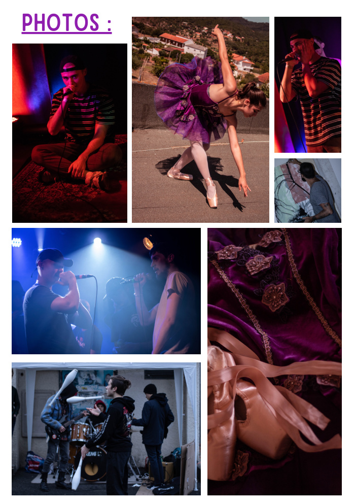
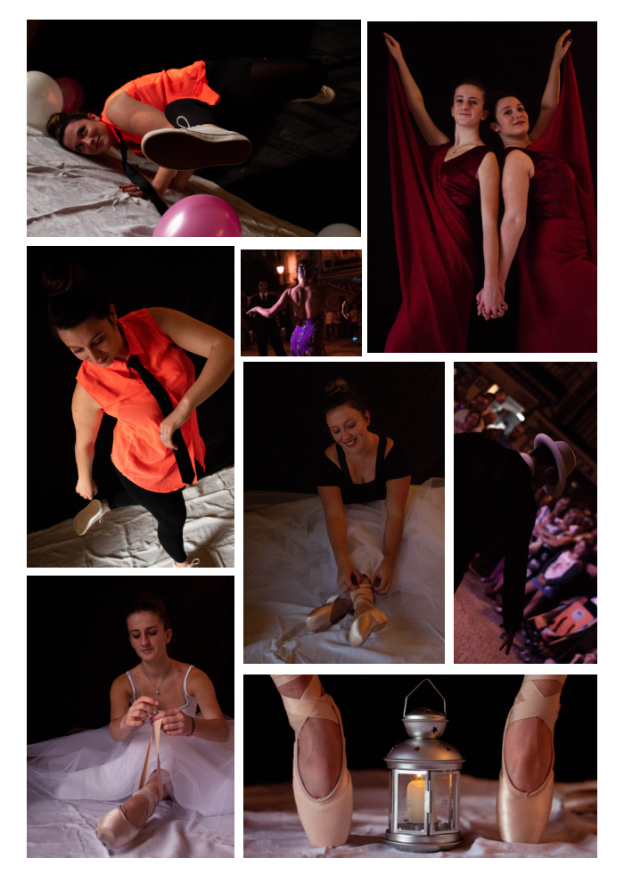
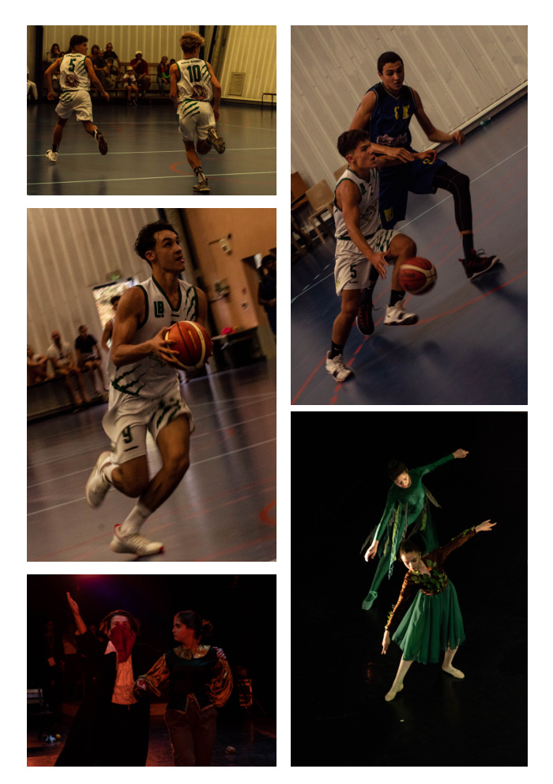

Mouvement & Spectacle
Série de photographies centrée sur le mouvement et le spectacle vivant : concerts et performances musicales, danse classique et contemporaine, arts du cirque et sport. L'objectif est de capturer l'instant, l'énergie et l'émotion dans toute leur intensité.
Matériel : Canon EOS 750D
Sélection de photos


